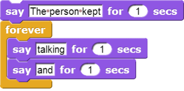

3A. Forever and a Day
From the previous exercise, you may have figured out what the block does. The forever block is the first block you have see that holds, or wraps around, other blocks. We call this a C block because of its shape. As the name forever implies, it will run the blocks inside it again and again and again and ... well, forever. You will find this block under the Control tab.

Will a block ever stop? Not unless you tell it to: Click on the stop sign icon on the upper right hand corner of the Snap! window. This stop sign will stop all scripts that are running in any sprite.